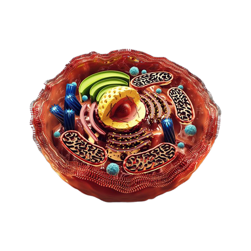

CÉLULAS
As células são as unidades básicas estruturais e funcionais de todos os seres vivos. Elas
são as menores unidades que podem realizar todas as funções vitais, como crescimento, reprodução, metabolismo e
adaptação ao ambiente.Todos os seres vivos são formados por células, com exceção dos vírus. Elas são encontradas
formando o corpo dos organismos. Alguns seres vivos, como bactérias e protozoários, possuem o corpo formado por
apenas uma única célula. Outros organismos, no entanto, são pluricelulares, sendo formados por várias células. Em
alguns organismos pluricelulares, as células estão agrupadas em tecidos, os quais constituem órgãos, que estão
agrupados em sistemas.
Tipos de células
Existem dois tipos principais de células: procariontes e eucariontes.
Células procariontes: são as células mais simples, encontradas em bactérias e arqueas. Elas não têm núcleo
celular, nem organelas membranosas.
Células eucariontes: são as células mais complexas, encontradas em todos os outros seres vivos. Elas têm um núcleo
celular, que contém o DNA, e organelas
membranosas, que realizam funções específicas.
Estrutura da célula:
Todas as células, independentemente do tipo, têm uma estrutura básica
que inclui as seguintes partes:
Membrana plasmática: é uma camada fina que envolve a célula e separa o
seu conteúdo do meio externo.
Citoplasma: é o material gelatinoso que preenche a célula e contém as organelas.
Núcleo celular: é a região da célula que contém o DNA, o material genético.
Funções da célula:
As células realizam uma variedade de funções vitais, incluindo:
Crescimento: as células se dividem para formar novas células, o que
permite o crescimento do organismo.
Reprodução: as células se combinam para formar novas células, o que permite a reprodução do organismo.
Metabolismo: as células usam energia para realizar processos químicos, como a digestão de alimentos e a produção
de energia.
Adaptação ao ambiente: as células podem se adaptar ao ambiente, o que permite que o organismo sobreviva em
diferentes condições.

Para concluir, as células são as unidades básicas da vida e são
essenciais para o funcionamento de todos os seres
vivos. O estudo das células é uma área fundamental da biologia, com aplicações em diversas áreas.